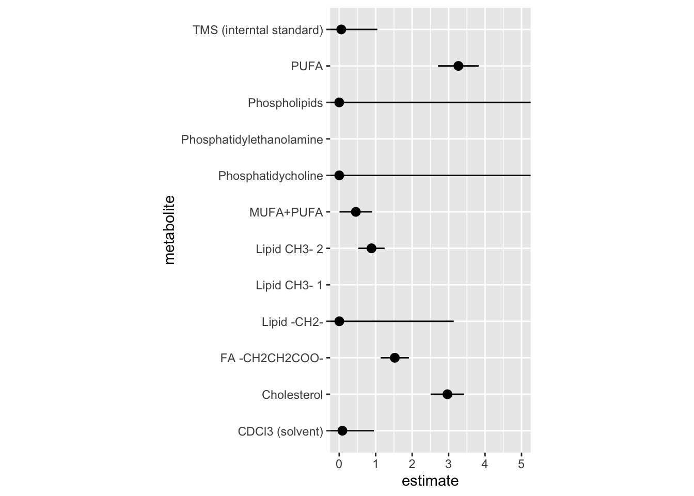

── Attaching core tidyverse packages ──────────────────────── tidyverse 2.0.0 ──
✔ dplyr 1.1.3 ✔ readr 2.1.4
✔ forcats 1.0.0 ✔ stringr 1.5.0
✔ ggplot2 3.4.4 ✔ tibble 3.2.1
✔ lubridate 1.9.3 ✔ tidyr 1.3.0
✔ purrr 1.0.2
── Conflicts ────────────────────────────────────────── tidyverse_conflicts() ──
✖ dplyr::filter() masks stats::filter()
✖ dplyr::lag() masks stats::lag()
ℹ Use the conflicted package (<http://conflicted.r-lib.org/>) to force all conflicts to become errors
── Attaching packages ────────────────────────────────────── tidymodels 1.1.1 ──
✔ broom 1.0.5 ✔ rsample 1.2.0
✔ dials 1.2.0 ✔ tune 1.1.2
✔ infer 1.0.5 ✔ workflows 1.1.3
✔ modeldata 1.2.0 ✔ workflowsets 1.0.1
✔ parsnip 1.1.1 ✔ yardstick 1.2.0
✔ recipes 1.0.8
── Conflicts ───────────────────────────────────────── tidymodels_conflicts() ──
✖ scales::discard() masks purrr::discard()
✖ dplyr::filter() masks stats::filter()
✖ recipes::fixed() masks stringr::fixed()
✖ dplyr::lag() masks stats::lag()
✖ yardstick::spec() masks readr::spec()
✖ recipes::step() masks stats::step()
• Search for functions across packages at https://www.tidymodels.org/find/Draft Quarto document
Tua Gyldenholm ![]()
Results
| Metabolites | Mean SD |
|---|---|
| CDCl3 (solvent) | 180 (67) |
| Cholesterol | 18.6 (11.4) |
| FA -CH2CH2COO- | 33.6 (7.8) |
| Lipid -CH2- | 536.6 (61.9) |
| Lipid CH3- 1 | 98.3 (73.8) |
| Lipid CH3- 2 | 168.2 (29.2) |
| MUFA+PUFA | 32.9 (16.1) |
| PUFA | 30 (24.1) |
| Phosphatidycholine | 31.7 (20.5) |
| Phosphatidylethanolamine | 10 (7.6) |
| Phospholipids | 2.7 (2.6) |
| TMS (interntal standard) | 123 (130.4) |
`stat_bin()` using `bins = 30`. Pick better value with `binwidth`.
Building the model
Running multiple models
Warning: glm.fit: algorithm did not convergeWarning: glm.fit: fitted probabilities numerically 0 or 1 occurred
Warning: glm.fit: fitted probabilities numerically 0 or 1 occurred# A tibble: 12 × 5
term estimate std.error statistic p.value
<chr> <dbl> <dbl> <dbl> <dbl>
1 metabolite_cd_cl_3_solvent 8.70e- 2 0.865 -2.82 0.00475
2 metabolite_cholesterol 2.97e+ 0 0.458 2.38 0.0175
3 metabolite_fa_ch_2_ch_2_coo 1.52e+ 0 0.387 1.09 0.276
4 metabolite_lipid_ch_2 2.59e- 3 3.14 -1.90 0.0578
5 metabolite_lipid_ch_3_1 4.45e+ 1 1.41 2.70 0.00697
6 metabolite_lipid_ch_3_2 8.85e- 1 0.361 -0.339 0.734
7 metabolite_mufa_pufa 4.56e- 1 0.449 -1.75 0.0798
8 metabolite_phosphatidycholine 1.28e-120 116628. -0.00237 0.998
9 metabolite_phosphatidylethanolamine 2.69e+ 1 1.32 2.49 0.0129
10 metabolite_phospholipids 2.39e- 19 68964. -0.000622 1.00
11 metabolite_pufa 3.27e+ 0 0.560 2.11 0.0345
12 metabolite_tms_interntal_standard 5.62e- 2 0.990 -2.91 0.00363Figore of the estimates
